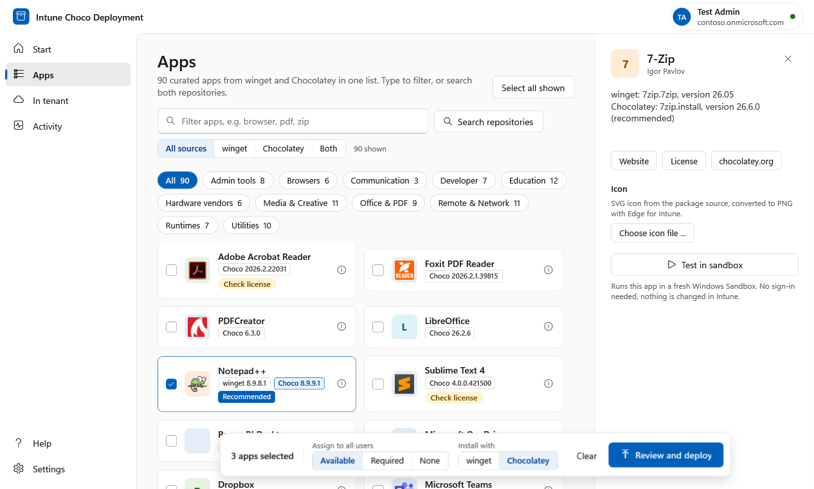
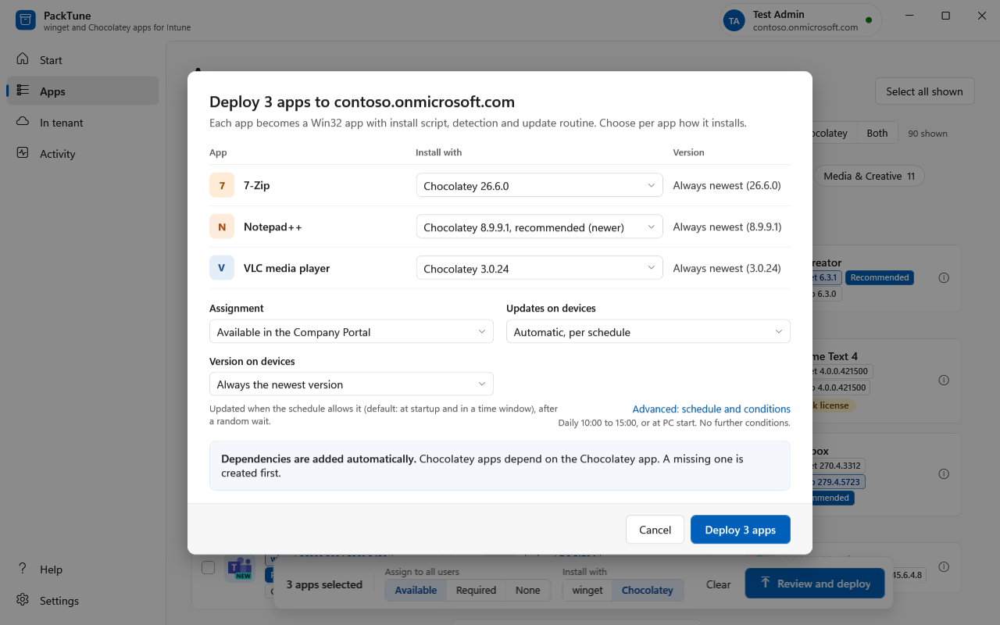
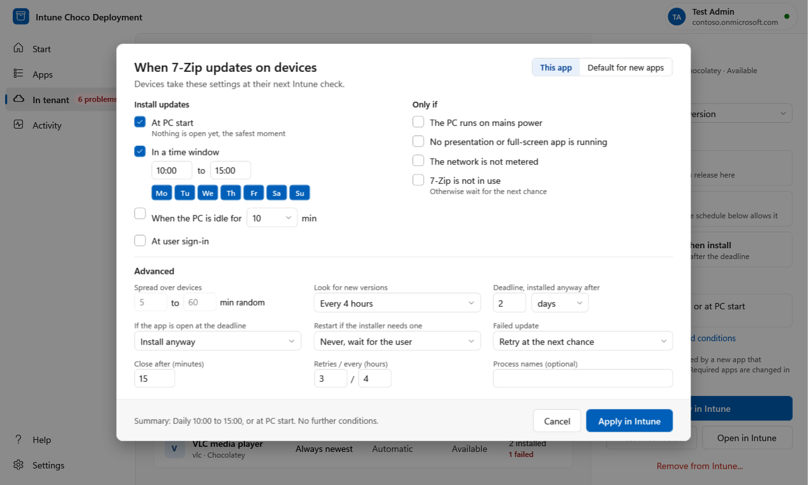
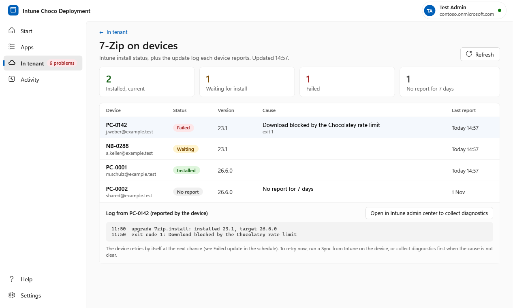
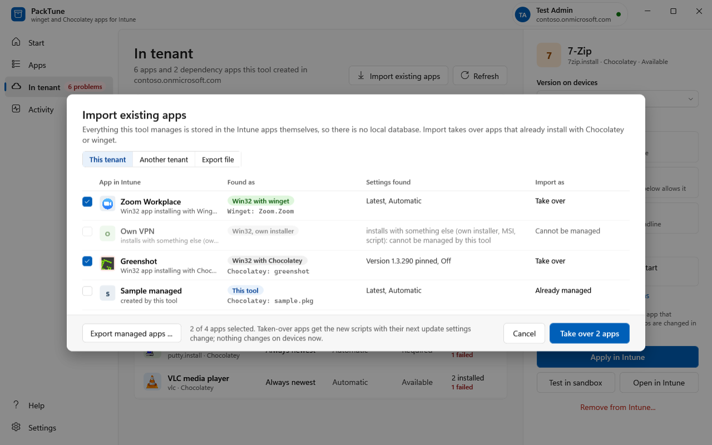
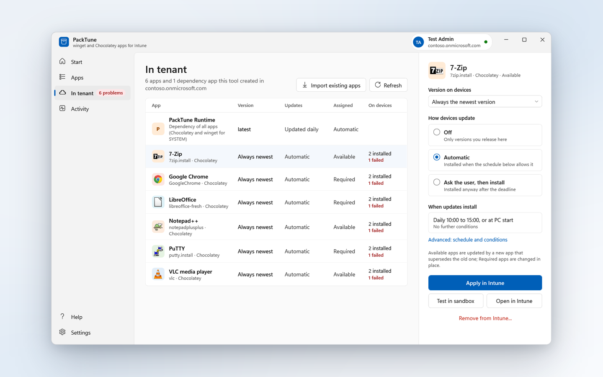

One list for winget and Chocolatey
Both sources in one searchable list. For every app PackTune shows both versions and marks the source with the newer one as Recommended.

For Microsoft Intune administrators
winget and Chocolatey apps for Intune
Pick an app, choose the source, deploy it as a Win32 app. PackTune keeps it current on the devices and shows what happened on each one.
Both sources in one searchable list. For every app PackTune shows both versions and marks the source with the newer one as Recommended.

Each app becomes an Intune Win32 app with install script, detection rule and assignment. A small PackTune Runtime app is added automatically as the dependency, so a missing runtime is created first.

Off, automatic per schedule, or ask the user with a grace period. Choose a time window, conditions such as mains power, and a deadline. Versions are the newest one or pinned.

See who has the app, who is waiting and who failed, with the update log each device reports and the cause of a failure.

Take over apps that already exist in a tenant, from another tenant, or from an export file. Nothing changes on the devices until you decide.

Package your own installers next to the catalog apps, with the same schedule and status.
Prepare a golden master image: install the software, run Windows Updates, add Office, apply optimizations, and keep the finished state documented, ready for VDI, AVD or a reference image.

Clone or download the repository and keep it together, for example in C:\admin. Start-PackTune.ps1, PackTune-Main.ps1 and Start.cmd belong together.
Once, without admin rights:
. C:\admin\PackTune-Main.ps1
Install-PackTuneComponentsDouble-click Start.cmd and follow the Start page. It creates the app registration for you.